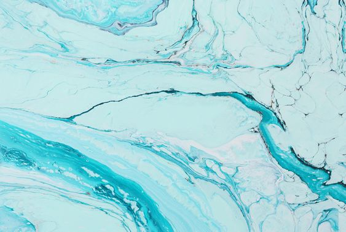

Single Picture

Picture with text
ini adalah background yang saya ambil dari pinterest untuk saya gunakan sebagai wallpapaer desktop kadang juga bisa sebagai background powerpoint.kenapa biru? karena itu warna kesukaan saya.terima kasih:)))